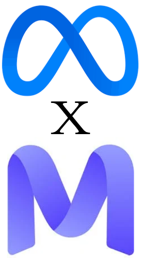
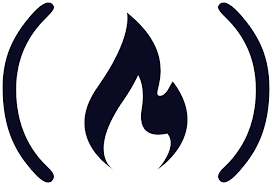

Matthew Boiarski
132 Stow Rd. Boxborough, MA 01719
21boiarskim@gmail.com | +1 (978) 394-7917
Professional Summary
Versatile Information Technology and Computer Science Professional with a proven track record of delivering innovative solutions across diverse technical domains.
Extensive expertise in operating systems, high-performance computing, software development, and networking.
Key strengths include:
- - Proficiency in full-stack development, graphics programming, AI integration, and computational problem-solving.
- - Experience in RF & Microwave technologies, mechanical engineering, and automation.
- - Expertise in leveraging cloud technologies (AWS, Azure, GCP) and advanced CS principles to drive innovation.
Dedicated to staying ahead of emerging technologies and applying them to create efficient, cutting-edge solutions that meet complex challenges
Committed to excellence and continuous improvement in all aspects of my work.
Education
University of Massachusetts Lowell, Lowell, MA 2024 - 2025
Bachelor of Science in Information Technology & Computer Science
Current Status: Senior
- Relevant coursework: Databases, Data Analysis, Shell Scripting, Back-End Web Development, Mobile Application Development, Networking, UNIX/Linux Systems Administration, Web Development, Software Development
- Skills developed: AWS, GCP, Microsoft Azure, TCP/IP, IT Operations, Microsoft Office Suite, HTML & CSS, JS
University of Massachusetts Lowell, Lowell, MA 2021 - 2023
Associate's Equivalent / Transfer, Computer Science
- Relevant coursework: Data Structures & Algorithms, Operating Systems, Cloud Infrastructure, Combinatorial Logic, PCB Design, Linear Algebra
- Skills developed: C, C++, Rust, OCaml, Bash, MIPS Assembly, x86, ARM, GUI Development, Mathematical Computing
Technical Skills
- Programming Languages: C, C++, C#, Java, Python, Zig, Rust, Go, Assembly(ARM,x86,MIPS)
- Scripting & Shell: Bash, KornShell, PowerShell
- Web Development: HTML, CSS, JavaScript, TypeScript, React, Angular, Vue, Node.js, Next.js, WebAssembly
- Software Development: OOP, Functional Programming, Multithreading, Embedded Systems
- Cloud & DevOps: AWS, GCP, Microsoft Azure, Docker, Kubernetes, CI/CD Pipelines
- Databases (DBs): MySQL, PostgreSQL, MongoDB, SQLite, Oracle
- Source Control & Build Tools: Git, GitHub, Gradle, Maven, Makefile, CMake
- Integrated Development Environments (IDEs): JetBrains, Eclipse, VS/VS Code
- Graphics & Game Development: OpenGL, Vulkan, WebGL, Qt
- AI & Natural Language Processing (NLP):LLMs, Prompt Engineering, RAG, LangChain, NLTK
- Machine Learning (ML) & Data Science: OpenCV, PyTorch, TensorFlow, Pandas, NumPy, Matplotlib, SciPy, Jupyter
- Cybersecurity: Penetration Testing, Vulnerability Assessment, Encryption, Network Security, Reverse Engineering
- Operating Systems (OS): Windows, Linux (Ubuntu, Arch, Debian), macOS, FreeBSD, Android, iOS
- Networking: TCP/IP, DNS, DHCP, VPNs, Firewalls, Load Balancing, Wireshark
- IoT & Embedded Systems: Arduino, Raspberry Pi, ESP32
- Project Management & Methodologies: Agile, Scrum, Kanban, Jira
Professional Experience

AI/LLM QA Expert – Chemistry, Biology, Math & Computer Science
Mercor & Meta
Website
LinkedIn
Remote | Contract | April 2025 – Present
- Conducted in-depth quality assurance testing on large language model outputs to ensure factual accuracy, coherence, and alignment.
- Collaborated with cross-functional teams to identify edge cases, (in specific domains) and improved AI system responses through structured evaluation.
- Applied testing protocols / grading rubrics to measure model performance across diverse content domains, contributing to safer and more reliable AI deployment.

Technical Lead / Back-End SWE |
Memphis Cult Music Group
Website
LinkedIn
Spotify
Remote | Part-Time | September 2023 – February 2025
- Developed backend applications in Python and C++ (WinAPI/MFC), integrating MySQL databases.
- Designed a revenue and payment system for artist payouts.
- Implemented AI-driven music technology solutions using DeepSeek and AudioCraft.
- Automated processes via Telegram bots and Spotify/DistroKid integration.
- Led technical hiring, mentoring, and collaboration with creative teams.
Drafter / Design Engineer Intern | QMicrowave
Website
LinkedIn
El Cajon, CA | Internship | May 2022 – August 2022
- Designed RF and microwave components, including bandpass filters, for DoD communications.
- Worked under ITAR regulations, handling confidential defense-related designs.
- Developed test fixtures using AutoCAD and SolidWorks.
- Contributed to L3Harris project initiation and LN2 environmental testing.
Projects
- LaTeX Viewer App: A Python-based program that allowed me to print in LaTeX format, with a provided keyboard.
- Voice Transcription App: A Python-based machine learning app for audio-to-text transcription. (On my LinkedIn)
- Rubik's Cube Demo: A C++ program which uses OpenGL and GLSL shaders to render it. (On my website)
- Demand Side Platform (DSP): Lowered advertising costs by ~40% through real-time bidding (RTB)
- Revenue/Payout System: Automates financial transactions for music labels.
- Automated Telegram Bots: Integrated with MySQL databases for real-time artist management.
- Computer Vision-Based Quality Control: Developed a vision system for part inspection.
Certificates

AWS Academy Graduate - Cloud Foundations

freeCodeCamp - Machine Learning With Python
Recognitions
2023 - 2025- Dean's List - University Of Massachusetts Lowell